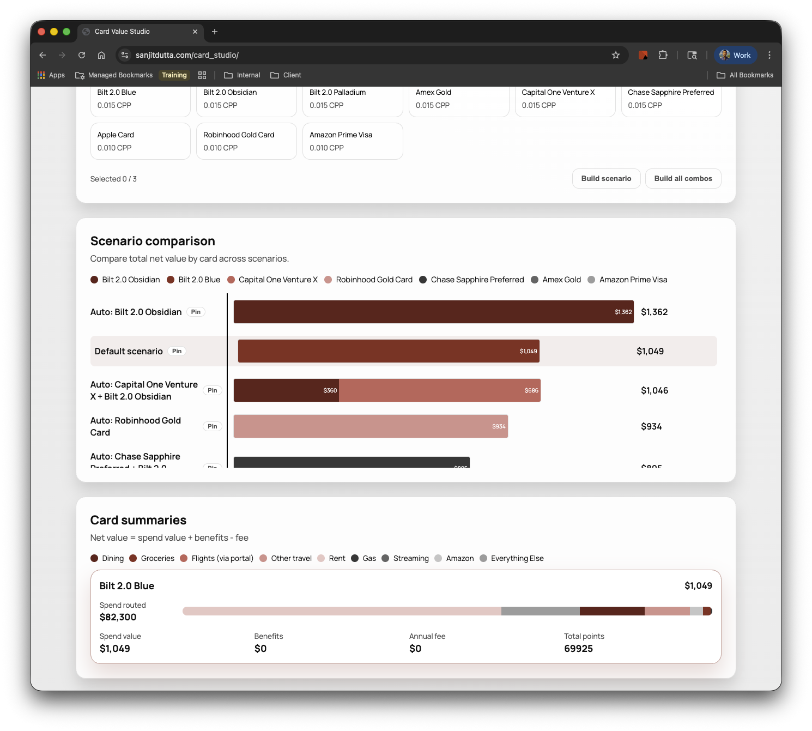

I set out to solve a real problem: rewards program changes made my credit card strategy obsolete. Using an AI coding agent, I built working software — not a prototype, not a script — in a single afternoon session.
This is materially different from brainstorming in ChatGPT. The agent wrote, tested, and iterated on code autonomously. I directed; it built.

| Implication | What this means in practice | Value-creation angle |
|---|---|---|
| Evaluate AI code quality, not just velocity | Audit code review practices, test coverage, and debt accumulation rate at portfolio companies using AI tools | Reduce hidden technical debt that compresses exit multiples |
| Quantify developer productivity gains | Build AI productivity metrics into 100-day plans — output per engineer, time-to-feature, defect rates | Monetize efficiency as margin improvement in value-creation plans |
| Assess agentic workflow readiness | Evaluate whether portfolio dev teams have the process maturity to supervise and govern semi-autonomous agents | Identify acceleration opportunities and governance gaps early |
| Diligence AI velocity and governance together | In due diligence, pair "how much AI is used?" with "how is output reviewed, tested, and deployed?" | Flag governance risk before it becomes a post-close liability |